PhotoMosh-Pro - Help
Get Help and Support for PhotoMosh-Pro here.
PhotoMosh-Pro is a fully featured desktop version of
PhotoMosh, including new effects, improved UI, high-res video export,
modulators, audio-reactive effects and more.
Requirements
-
PhotoMosh-Pro requires Windows (7 or later, 64 bit) or macOS (10.13 or later).
PhotoMosh-Pro is Apple M1 Silicon compatible.
- Export render size is limited to 4096 x 4096 pixels or smaller.
- Render times are dependent on GPU speed, export size, duration and frame rate.
Installation
-
Upon purchase you will be sent a receipt email with your download link and license key. Save this email as you
will need the download link for future upgrades.
- Click the 'Download PhotoMosh-Pro' button in the receipt email to view your download link.
-
To install, download and unzip the zip file then:
- Windows: Double-click the 'PhotoMosh-Pro Setup.exe' file to run the installer.
-
macOS: Double-click the 'PhotoMosh-Pro.dmg' file, then drag the PhotoMosh-Pro app icon to
your Applications folder.
-
The first time you run PhotoMosh-Pro you will be asked to enter your license key. Your license key can be found
in the receipt email that you received on purchase. Internet connection is required for one-time registration.
- PhotoMosh-Pro may be installed on up to 3 devices for each license.
-
To install on macOS, ensure you have 'Allow apps downloaded from App Store and identified developers' selected
in 'System Preferences' -> 'Security and Privacy'.
How To Upgrade
- To upgrade to the latest version, re-download your files and re-install the app (see above).
-
To download your files, click the 'Download PhotoMosh-Pro' button in your original purchase receipt email
(search for "PhotoMosh"). Or login to gumroad.com to access your files.
- Your license information and presets will be retained when upgrading.
- Note that some presets may need to be updated when upgrading to a new version.
- Upgrades are free within the same major version number.
Cancelling / Restarting Yearly Subscriptions
-
If you cancel your PhotoMosh-Pro subscription you lose access to the application. Gumroad.com will email you a
few days before your subscription renews if you want to cancel before renewal.
-
You can restart a cancelled yearly subscription by clicking the 'Download PhotoMosh-Pro' button in your original
purchase receipt email (search for "PhotoMosh”). Then click 'Membership' -> 'Restart'. If you created an account
at Gumroad.com, you can also find your membership details there. There is no charge for restarting a cancelled
subscription.
How To Use
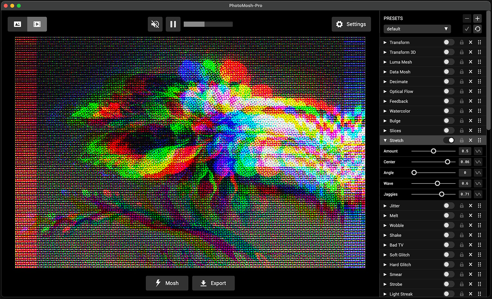
-
Choose to load a file or use the Webcam. Supported input file types are: MP4, MOV, WEBM, GIF, PNG, JPG & WEBP.
- Load a new file at any time by dragging it onto the app.
-
Click the 'Mosh' button to randomize Effects, or use the Effects panel at right to toggle Effects and modify
parameters. Use Ctrl-Z to undo a Mosh.
-
Click the 'Export' button to record and save media output. Output media is saved to the folder selected in
Settings -> General -> Save To. By default this is the 'Desktop' folder.
-
Select output mode with the top-left Output Mode button. Choose between image output mode (JPG/PNG) or video
output mode (MP4/WEBM/GIF).
-
For video input, use the video controls at top-center to play / pause and skip the video. The Mute button will
mute input video.
- Use the application Main Menu for commonly used commands.
Effects Panel
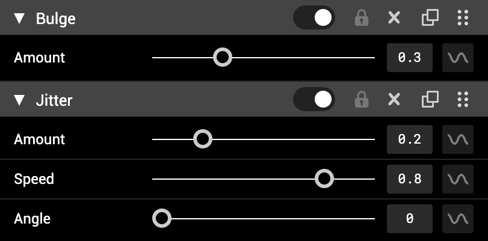
The Effects panel is where you dial in your effects. Effects are applied from top to bottom. Drag and drop effects
to change the order.
Each effect has the following buttons left to right:
- Expand the parameter panel with the triangular arrow button.
- Enable effects with the circular toggle button.
- Use the lock button to lock effects. Locked effects will not be modified when clicking the Mosh button.
- Remove effects with the X button.
- Duplicate button creates a duplicate of this effect directly below.
- Effects can be dragged with the 6 dots icon at right to change the order that effects are applied.
Use Main Menu -> Effects to 'Disable All Effects', 'Remove All Effects', 'Load Default Effects' or 'Randomize
Effects Order'.
Add Effects
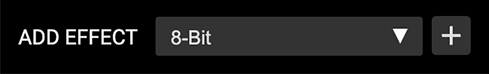
Add new Effects by using the 'ADD EFFECT' panel at bottom of the Effects list. This allows you to stack multiple
versions of the same effect.
Mask Effects
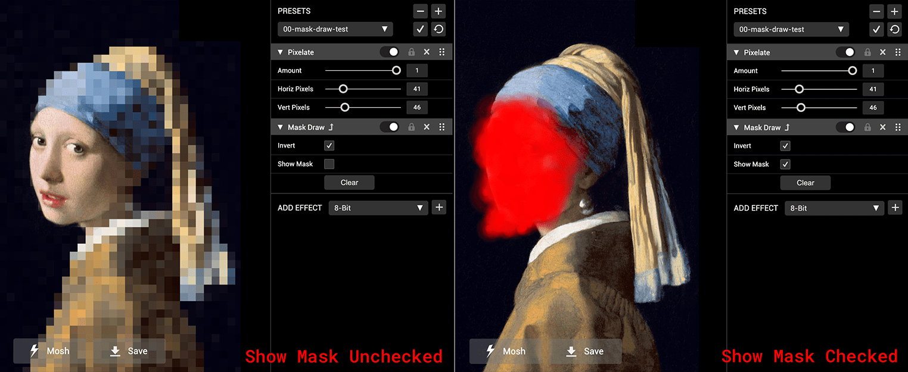
The 3 Mask effects ('Mask', 'Mask Blocks' and 'Mask Draw') can be used to show or hide effects in selected areas
of the image. Mask Effects only mask the effect layer directly above. To mask multiple layers,
add multiple Mask effects. Use the 'Show Mask' checkbox to view the current mask as red. Use the 'Invert' checkbox
to flip the mask effect.
-
'Mask Draw' lets you draw the mask with the mouse directly in the preview area. Drawing slower gives a smaller
brush size. Use the 'Erase' checdddk box to erase and the 'Clear' button to clear the entire mask.
-
'Mask' lets you import an image file to use as a mask. The red channel of the image is used for the mask, so red
or white is masked and black is not masked. Use 'Invert' to flip the mask.
- 'Mask Blocks' creates a random animated pixelated mask area.
Overlay Effect
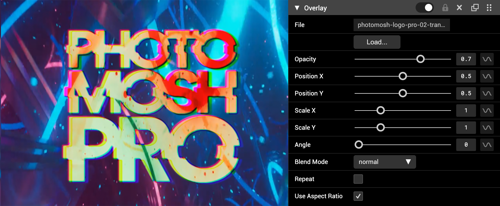
The Overlay effect allows you to load additional images or videos as a new layer. Overlays are scaled to fit the
preview window. Video overlays will be synced to the main timeline. Overlay layers are only affected by effects
below them in the effect stack.
- Click the 'Load' button to select an image or video file.
- Set opacity, position, scale, and rotation angle with the sliders.
- Blend mode can be 'normal', 'additive', 'multiply', 'screen', 'softlight' or 'difference'.
- Check 'Repeat' to repeat the overlay texture when scaling or moving.
- Check 'Use Aspect Ratio' to maintain the aspect ratio of the loaded media.
Presets
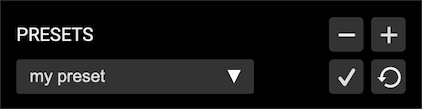
Presets allow you to save and load favorite Effects combinations.
-
Plus button - Create a new preset. Enter a preset name to create a new preset. Only enabled Effects are saved to
the preset.
- Minus button - Delete selected preset.
- Check button - Update selected preset with current Effects settings.
- Revert button - Revert selected preset to last saved settings.
-
Use Main Menu -> Presets -> Open Presets Folder. Open presets save folder in Finder/Explorer. This allows you to
copy, export and import presets. Copy a preset file into the Preset Folder to import a preset.
- Use Main Menu -> Presets -> Next Preset and Previous Preset to switch between presets.
- Use Main Menu -> Presets -> Random Preset to randomly select a preset.
-
To first 9 presets in the preset list can be selected via a key shortcut Cmd-#, where # is a number from 0 to 9.
Cmd-0 loads the default preset as this is always the first preset in the list.
Settings
The settings panel allows you to specify export settings, general settings and audio settings.
Export Settings
Export settings allow you to specify the media exported by PhotoMosh-Pro.
-
The export settings panel will change based on if you are exporting as Image or Video. Use the top-left Export
Mode toggle button to switch between Image or Video export mode.
-
Export Settings will update when new media is loaded to match the input media. Use the 'Lock Export Settings'
checkbox to preserve export settings when loading new input media.
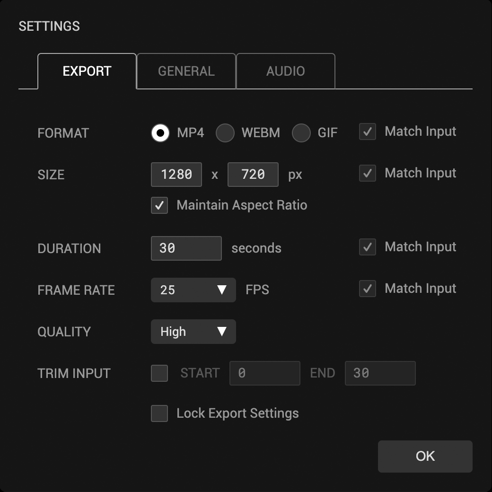
-
Format - Select video file format (MP4/WEBM/GIF) or image file format (PNG/JPG). We recommend
using MP4 for large or long videos or WEBM if transparency is required. GIF format is good for short small loops
and produces very large files at low quality.
-
Size - Select pixel size. Input media will be scaled to fit the export size. Pixel size is the
main factor for export render time and performance. Try reducing export size for faster exports. Check 'Maintain
Aspect Ratio' to preserve input media aspect ratio.
-
Duration - If export duration is longer than input duration, video input will be looped. If
export duration is shorter than input duration, export video will be trimmed from the start. (Video output mode
only)
-
Frame Rate - Frames per second. Higher values increase smoothness but produce larger files.
(Video output mode only)
-
Quality - We recommend using the default quality (High) for optimal quality and file size. (MP4
and WEBM only)
-
Trim Input - Trim Input allows you to trim the input video by setting start and end times. Note
that setting these options will override the export duration option to match. If you want a trimmed input to
loop you can set the export duration after trimming. This option only shows when loading video.
-
Lock Export Settings - Check this to preserve export settings when loading new input media.
General Settings
General settings allow you to specify app-wide settings and are retained during the current session.
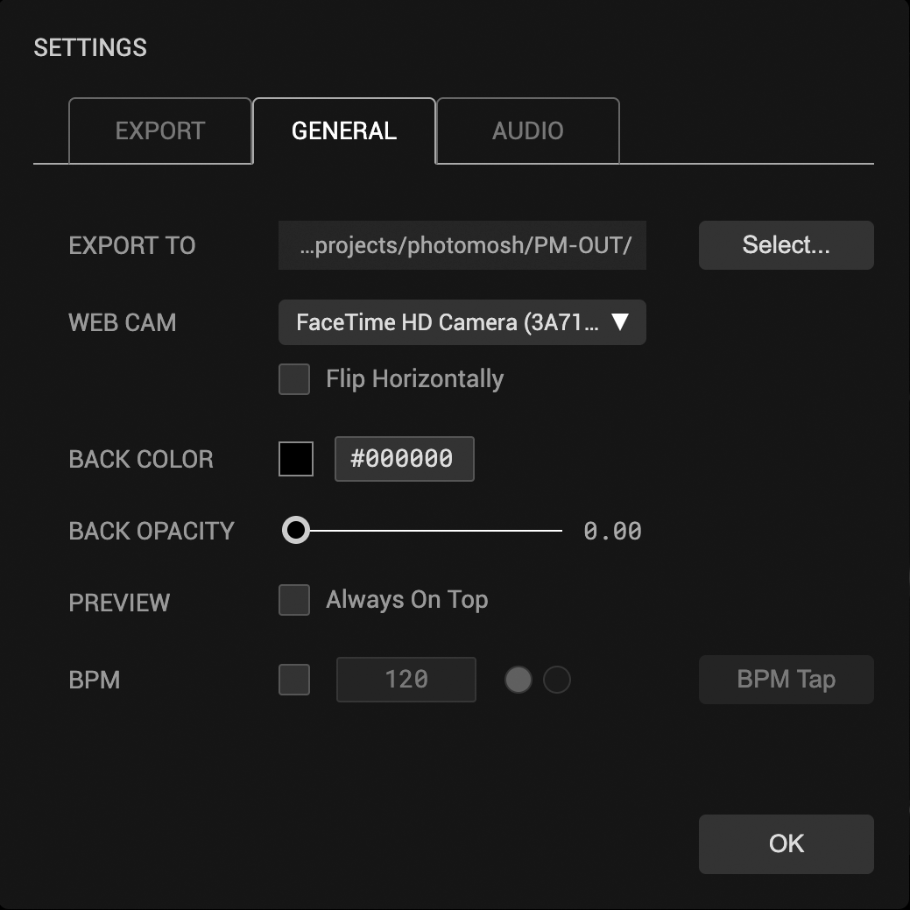
- Export To - Select folder to save exports to.
-
Webcam - Select Webcam used by Webcam mode. For Webcam mode, use Main Menu -> File -> Use
Webcam
-
Back Color - Select Hex color value for the background. This color is used when input media or
effects have transparency.
-
Back Opacity - Select background opacity. By default this is set to 0 to allow exporting media
with a transparent background. Set to 1 to see the Back Color behind transparent media. Transparent background
is represented by a checkerboard pattern.
-
Preview - Check the 'Always On Top' option to force the Pop Out Preview window to always be on
top of other windows.
-
BPM - Check to use BPM timing for effect modulator loop times. This can be used to match
modulator times to music BPM (see 'Modulators' below). Type in the BPM value, or use the 'BPM Tap' button to set
BPM by tapping to the beat.
Audio Settings
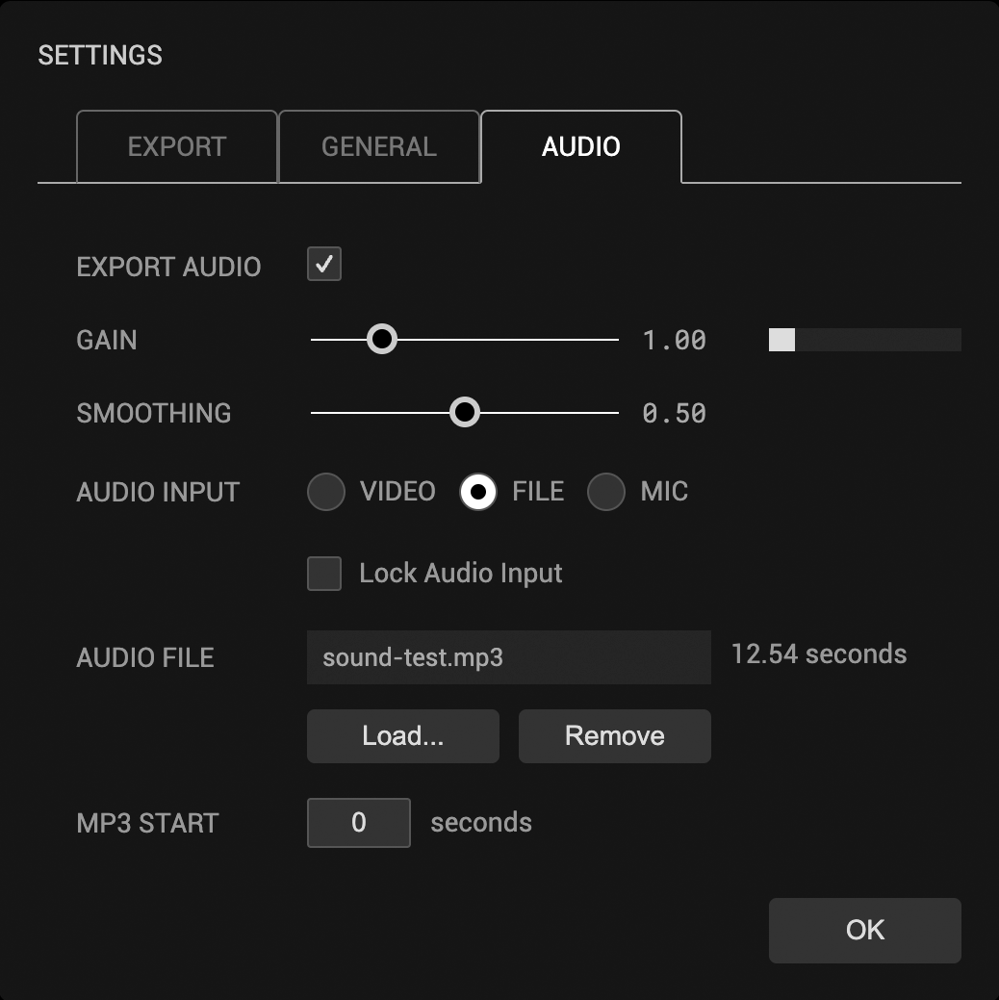
- Export Audio - Whether to export audio.
-
Gain - Use the 'Gain' slider and the volume meter to modify how input volume affects the audio
modulators. (See 'Audio Modulators' below)
-
Smoothing - Controls volume level smoothness for audio modulators. Higher smoothing will give
slower changes over time. Lower smoothing will give faster, more jumpy animations.
-
Audio Input - PhotoMosh-Pro can take 3 different audio inputs which will be used for audio
export and to drive the audio modulators.
-
VIDEO - Select 'Video' to use the input video's audio track. For inputs without audio, this
option will switch to 'NONE'
-
FILE - Select an external audio file (MP3 or WAV) to override the input video audio and be
used by the audio modulators. Use 'MP3 Start' time in combination with video export duration to create an
audio loop.
-
MIC - Use the Webcam mic to record live audio. Select from multiple device mics. When this
option is selected the main 'Export' button becomes a 'Record' button and will record live audio until the
'Stop' button is pressed.
- Check 'Lock Audio Input' to retain the current Audio input when importing new media.
Modulators
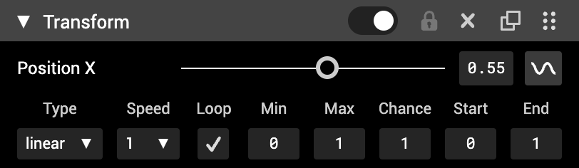
Modulators allow you to modify Effects parameters over time. This is a great way to get more variety into your
video loops. Modulators are only enabled for video output mode. Click the modulator (sine wave) button to enable
modulator and open the modulator drawer.
-
Type - Select from the following options:
- Linear - Linearly changing value over time range.
-
Sine - Smooth change with a sine wave shape. Good for looping back to the original value.
- Step - Jumps between Min and Max values over time.
- Noise - Smoothly varying randomized value. Noise will loop within the time range.
- Rand - Discrete random variations, more jumpy than noise.
- Audio - See 'Audio Modulators' below.
- Midi - See 'MIDI Modulators' below.
-
Const - Uses the max value as a constant value. Useful for using with Chance, Start and
End.
-
Speed - Speed of modulation within time range. Uncheck the 'Loop' checkbox to allow slower
speeds.
-
Loop - Check this to ensure effects loop seamlessly. Uncheck this to change effects slowly over
the entire video duration (see 'Modulator Speed' below).
- Min - Minimum possible value. Used as a factor to multiply the output value.
- Max - Maximum possible value. Used as a factor to multiply the output value.
-
Chance - Chance that parameter value will randomly drop out to zero over time range. Good for
toggling effects randomly over time.
-
Start - Start time as a factor of export duration. Effect value will be zero outside the
start/end time window.
-
End - End time as a factor of export duration. Effect value will be zero outside the start/end
time window.
Modulator Speed
Modulator speeds can use 3 different times scales:
-
When 'Loop' is checked modulators will seamlessly loop within the 'Loop Time' which is around 4 seconds, based
on the export duration.
-
When 'Loop' is unchecked modulators will loop within the entire export duration. This allows slower speeds. With
'Loop' unchecked you can type in any speed between 0.01 and 8.
- When 'BPM' is checked in Settings -> General, the loop time will sync to the BPM timing.
Audio Modulators
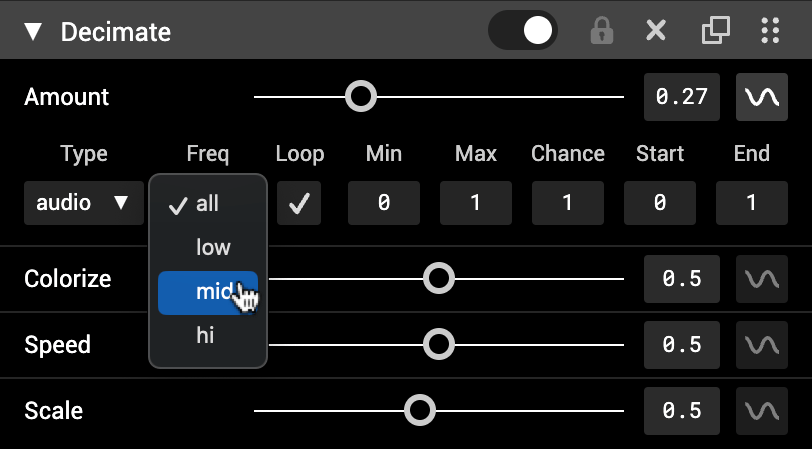
Audio modulators are a great way to generate audio-reactive videos. Use the volume of the audio input to modulate
parameters.
- Use 'Freq' to select frequency range to allow separate motion for bass, melody or hi-hats.
- Use Settings -> Audio -> Gain and Smoothing to control global input volume and smoothing.
MIDI Modulators
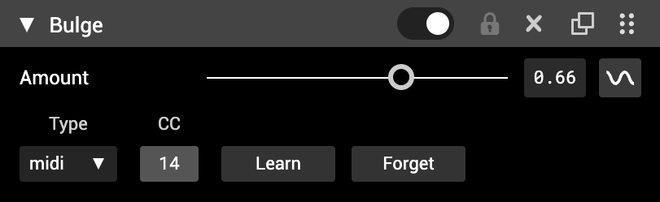
MIDI Modulators allow you to use a MIDI controller device or DAW to control effect parameters.
-
To connect a MIDI input, click the 'Learn' button then move a slider or press a key on your MIDI controller. The
'CC' display will change to a number representing the incoming MIDI CC event number.
-
CC events from knobs or sliders will be mapped to the parameters value range. Note values from keyboards will
use the velocity of the note as the value.
-
MIDI modulators currently only work in Live mode and will not be recorded for export. To record or stream live
moshing we recommend using OBS.
-
To use MIDI input from internal software MIDI sources such as a DAW, you may need to route the MIDI out from the
DAW back into the computer in order for PhotoMosh-Pro to receive it. For MIDI routing on Mac, you can use the
built in MacOS app:
Audio MIDI Setup.
-
To test if your MIDI Device can been seen by PhotoMosh-Pro use this
MIDI Test webpage
Batch Export

Batch export allows you to apply the currently enabled effects to multiple files (images or videos). To do a batch
export, From the Main Menu select 'File' -> 'Batch Export...'. To retain export settings (such as export size)
across the batch, check the 'Lock Export Settings' checkbox in Settings -> Export. Export settings (e.g. image
size) will match the current export settings unless 'Match Input' is selected in the export settings, in which
case the source file settings will be used for that value.
Pop Out Preview
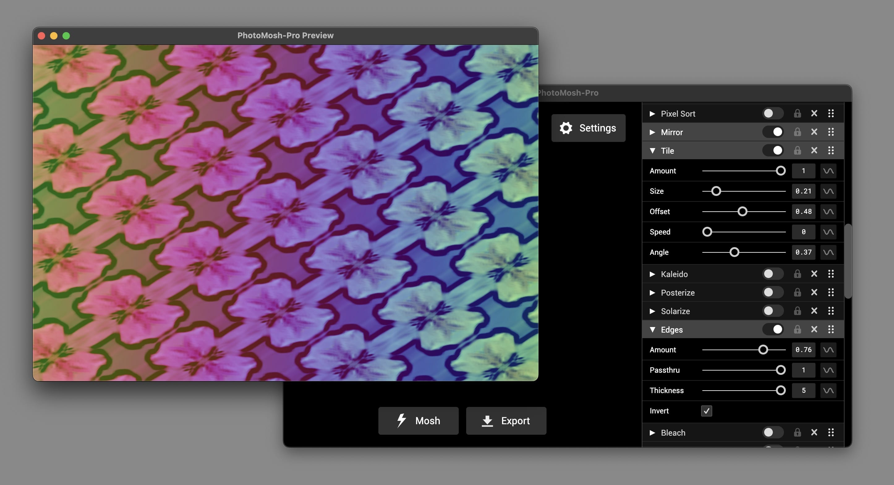
Pop Out Preview moves PhotoMosh-Pro output to a separate window. This is useful to display output on a second
monitor for sending to a projector, or for live recording via OBS or similar. Use Main Menu -> File -> Pop Out
Preview. The Pop Out Preview window size will match the export dimensions, and can be resized or maximized. On
Windows, use the right-click window menu to maximize and restore the window. To set whether the Pop Out Preview is
always on top, use the Settings -> General -> Preview 'Always on Top' checkbox.
Keyboard Shortcuts
Keyboard Shortcuts can be viewed from the application main menu. For MacOS use Cmd key, for Windows use Ctrl key.
Keyboard shortcuts are:
- Cmd-O - Load File
- Cmd-W - Use Webcam
- Cmd-S - Save
- Cmd-P - Toggle Pop Out Preview window
- Cmd-M - Mosh Effects
- Cmd-Z - Undo Mosh
- Cmd-D - Disable All Effects
- Cmd-E - Randomize Effects Order
- Cmd-Cursor Right - Next Preset
- Cmd-Cursor Left - Previous Preset
- Cmd-Cursor Left - Previous Preset
- Cmd-Cursor Left - Previous Preset
FAQ
-
What is PhotoMosh-Pro?
PhotoMosh-Pro is a fully-featured desktop version of PhotoMosh, offering an enhanced user experience with new
effects, an improved UI, high-resolution video export, modulators, audio-reactive effects, and more. It's
designed for users seeking advanced functionality and greater creative possibilities compared to the standard
PhotoMosh.
-
How do I ensure the best performance for PhotoMosh-Pro?
Make sure that you are using the latest version of PhotoMosh-Pro, as updates can
include performance improvements and bug fixes.
-
Which factors affect PhotoMosh-Pro's video render time?
The main factor for PhotoMosh-Pro performance and render time is the export pixel size. Set export size
in Settings -> Output -> Size. PhotoMosh-Pro can export at up to 4096 x 4096 px although render times and
preview frame rate may be slow depending on device GPU. For best performance we recommend exporting videos at
HD resolution (1280 x 720 px) or smaller. You can also work at smaller sizes then increase the size for final
export.
-
What format should I use for large video dimensions and durations?
For large video dimensions or duration, we recommend exporting as MP4 or WEBM rather than GIF. The GIF codec
produces very large files and has a limited color palette.
-
Which output formats support alpha channels (transparency)?
Alpha channel (transparency) is supported for WEBM, GIF and PNG output. MP4 and JPG do not support alpha
channels. GIF alpha channels are 1-bit.
-
Why are my exported files not transparent?
First make sure the background opacity is set to 0 in Settings -> General -> Back Opacity. Transparency is
only supported for PNG, WEBM and GIF exports. WEBM transparency may not show up depending on what app you use
to view the file. To check a file for transparency can use this
Transparent Video Tester.
-
How do I record or stream live moshing?
To record or stream live moshing we recommend using OBS. OBS is free
software that handles streaming and recording video. Use the Pop-Out preview (Main Menu -> File -> Pop Out
Preview) to make it easier to size the window.
-
Why are my video exports failing?
If video exports are failing, check that you have enough free space on your hard drive. If the hard drive is
almost full this can cause export to fail. Also make sure you are saving to a local (non-network) drive.
Version History
View Version History.
Terms of Use
View Terms of Use.
Email Support
PhotoMosh-Pro customers are eligible for support via email for up to 2 years after initial purchase. For email
support, please email us with a detailed description of the issue and your purchase email address.
Email Support